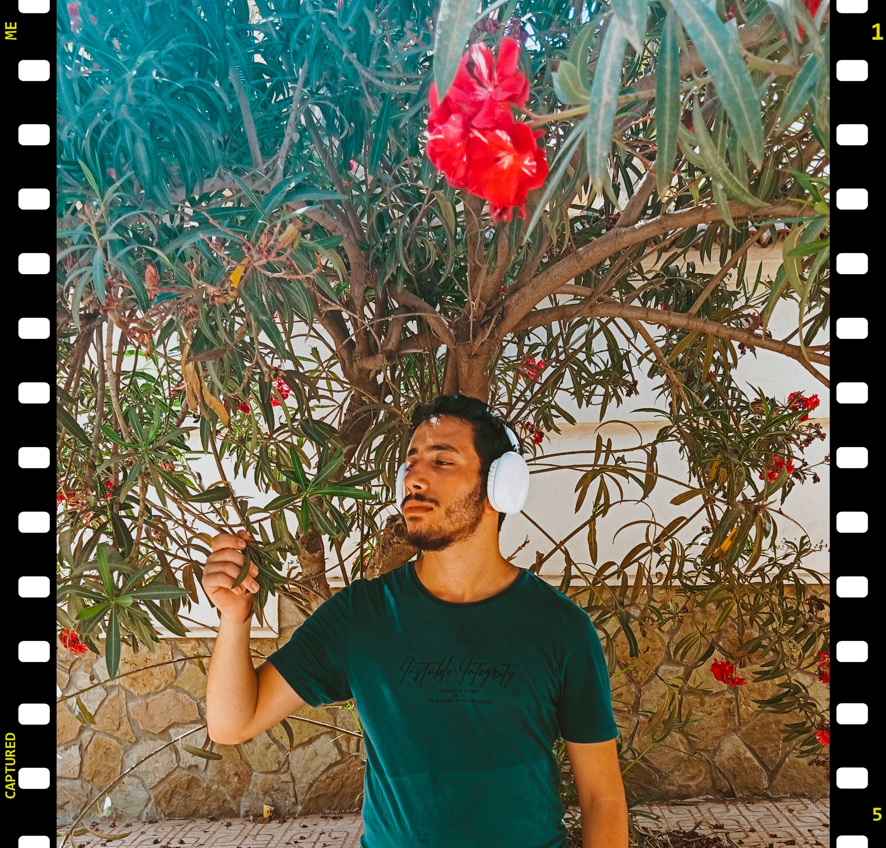

Restaurant Website
A complete restaurant-focused website built with a practical, customer-friendly interface.
Software Engineering Student · Outbound Operator · Product Builder
I combine software engineering with hands-on warehouse operations to build practical tools, improve workflows and solve real operational problems.

Software Engineering · Product · Operations
I'm a Software Engineering student with hands-on experience in operations, warehouse management and product ownership. I enjoy designing systems that make work simpler, faster and more reliable.
My strongest advantage is connecting technical thinking with operational reality — from WMS and inventory workflows to web applications, databases and internal tools.
5 websites/projects successfully completed, plus desktop and cross-platform software work.
A complete restaurant-focused website built with a practical, customer-friendly interface.
Desktop application work focused on multimedia workflows and a usable interface.
Five websites delivered successfully, demonstrating practical development and problem-solving skills.
Engineering software solutions for iOS, Windows and Android environments.
A practical mix of software engineering, product and operations.
Working hands-on in outbound warehouse operations while developing practical software and digital tools that improve real workflows.
Building internal tools and applications with modern JavaScript/TypeScript stacks, databases and clean user interfaces.
Designing software around barcode-driven warehouse workflows, order tracking, packing validation and operational visibility.
Replace the contact details below with your real information before publishing.